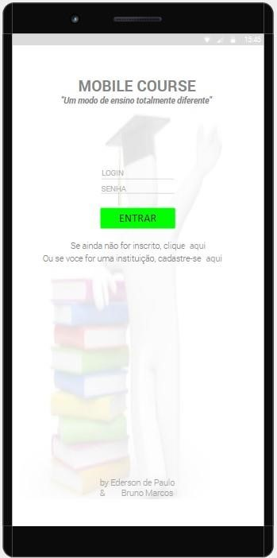
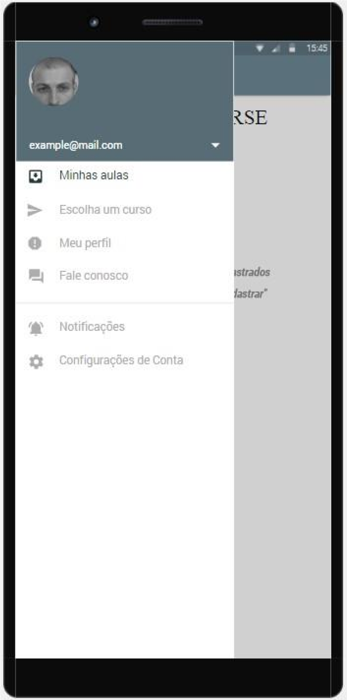
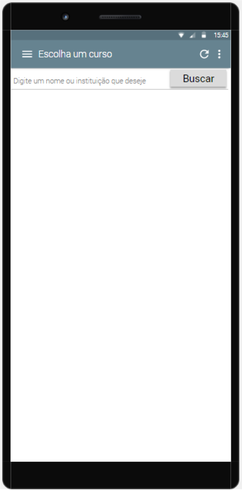
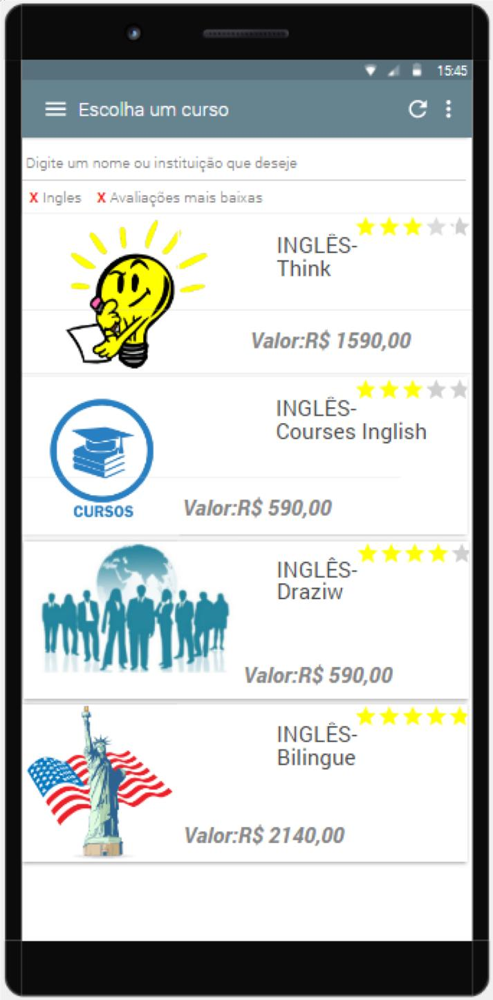
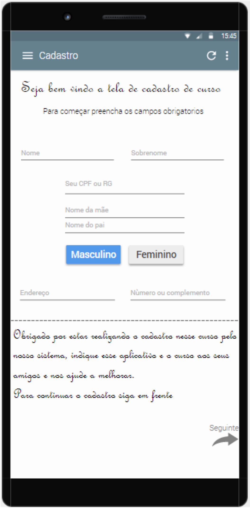

Mobile Courses é um aplicativo que apresenta cursos profissionalizantes, contém um campo de pesquisa que permite pesquisar por cursos filtrando por atributos como região, preço, avaliação.
Hoje em dia é difícil para um jovem encontrar um emprego sem nenhuma qualificação, e também para encontrar um curso barato e de qualidade. Sites de buscas não contém um foco em cursos, então os filtros são mais generalizados.
O aplicativo contém comentários para cada curso feito e também nota de avaliação pelos estudantes que fizeram o curso, também contém possibilidade de cadastro para usuários e instituições.
Clique aqui para ir ao pdf do trabalho.
A linguagem que seria utilizada era o Java, pois é a linguagem mais utilizada para desenvolver aplicativos Android. A IDE que seria utilizada era o Android Studio.
Ao iniciar o aplicativo temos a tela inicial, nela o usuário poderá realizar o seu login, ou caso ele não esteja cadastrado, ele poderá clicar na opção abaixo dos campos de login que o levará para a tela de cadastro de aluno.
Logo abaixo há uma opção de cadastro de instituições, para as instituições que desejam cadastrar seus cursos. Caso o usuário já tenha feito seu cadastro e inserido seu login e senha, ao clicar no botão “ENTRAR”, ele será levado à próxima tela do sistema. Os campos de login e senha serão obrigatórios.
Essa tela foi chamada a partir da outra e, como é mostrado, o usuário ainda não possui cursos cadastrados em sua conta, por isso é mostrado uma tela deslizante em que mostra uma opção de escolher um novo curso, as suas aulas cadastradas, o perfil, um campo reservado para podermos se comunicar com o cliente, uma opção para as notificações e a outra para as configurações de conta. Como o usuário não tem cursos cadastrados, simulamos que ele queira cadastrar-se em um novo curso, e por isso ele clicou na opção de escolher um novo curso, chamando a próxima tela.
Na tela acima é onde o usuário usa as opções de filtragem na aba ao lado de atualizar a página, ao escolher o nome do curso e ou a instituição ele clica no botão de buscar e então serão mostrados os cursos de acordo com sua filtragem escolhida.
Com as filtragens escolhidas como inglês e com as avaliações mais baixas, foram apresentados esses cursos em ordem da pior classificada (três estrelas) até a melhor qualificada (cinco estrelas), mostrando o nome dos cursos e o nome da instituição, com o preço logo abaixo, com isso, ao usuário escolher um curso, ele será direcionado à próxima página de informações do cursos e cadastro do mesmo.
Esta tela foi chamada quando o usuário escolheu a primeira opção de curso. Nela são apresentadas algumas informações sobre o curso, um botão que o levará a uma nova tela onde ele terá ainda mais informações sobre o curso, um botão que quando selecionado irá direcionar o usuário a fazer o seu cadastro no curso. Logo abaixo, há um campo direcionado a avaliação do curso, mostrando quantas pessoas já realizou esse curso, e quantas gostaram ou não gostaram. E no campo abaixo, são mostrados os comentários de alunos que já fizeram esse curso. Os comentários são divididos em três áreas, sendo pintada de uma cor diferente cada uma sendo vermelha como sendo um comentário ruim, amarelo como sendo um comentário não muito bom, mas que ainda assim apresenta alguma qualidade sobre o curso, e o último, o verde, que são aqueles comentários considerados bons sobre o curso.
Esta tela é chamada depois que o usuário clicar no botão de realizar cadastro, nela é apresentado alguns campos de resposta necessários para o cadastro no curso, como nome e sobrenome, CPF, nome do pai e mãe, endereço e o sexo, após preencher todas essas informações o usuário poderá clicar na seta logo abaixo que assim finalizará o cadastro no curso. Nessa tela, todos os campos serão obrigatórios serem respondidos.